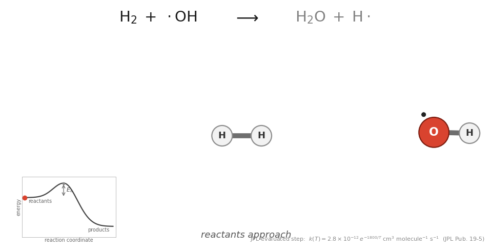
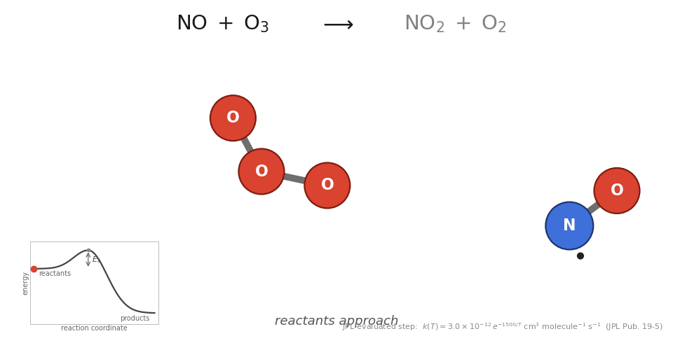

Visualisations
Interactive schematics of the Lagrangian machinery, the fast photochemical cycle, and the Eulerian analysis grid — plus real animations rendered from the model's own output and mechanism files.
1. Parcels, winds and the Eulerian remap
Nine hundred schematic air parcels are advected by a stylised wind field —
tropical easterlies, mid-latitude westerly jets, evolving synoptic eddies —
while a tracer is continuously emitted at the marker and lost by first-order
decay. Click anywhere on the map to move the source. Toggle the
Eulerian view to see how the model bins parcels back onto the 72 × 36 grid
to produce the fields written to stoch3d.dat.
2. The fast photochemical cycle
A simplified map of the O3–NOx–HOx–VOC engine at the heart of CRI. Solid blue edges are thermal reactions, dashed amber edges need sunlight. Click a species for its role and key reactions; switch to night to watch the photolysis channels close and the reservoir chemistry (PAN, RO2NO2, N2O5/HNO3 pathways) dominate.[3],[7]
3. The Eulerian analysis grid
STOCHEM's diagnostic output is written on a 36-latitude × 9-level zonal mesh in pressure coordinates. Select a species and slide the season to see how a schematic zonal-mean field shifts — the same layout used for the model's real zonal-mean plots (with the manuscript's discrete rainbow palette).
4. Why 50,000 parcels — the census problem
STOCHEM writes its fields by counting parcels per Eulerian cell — a census.
With ~50,000 parcels over 23,328 cells the mean is only ~2 parcels per cell,
so cell means fluctuate roughly as Poisson counting noise
(σ/μ ≈ 1/√μ). Add parcels and the noise falls as √N; refine the
grid and it rises. Watch the live cell counts against the Poisson
prediction, and why empty cells cluster where the flow diverges.
Rendered from the model
These animations were produced from the STOCHEM Fortran code's own output and input files (mechanism, emission fields, 3-D mixing-ratio output) — real model data, not schematics.


stoch3d.dat).

